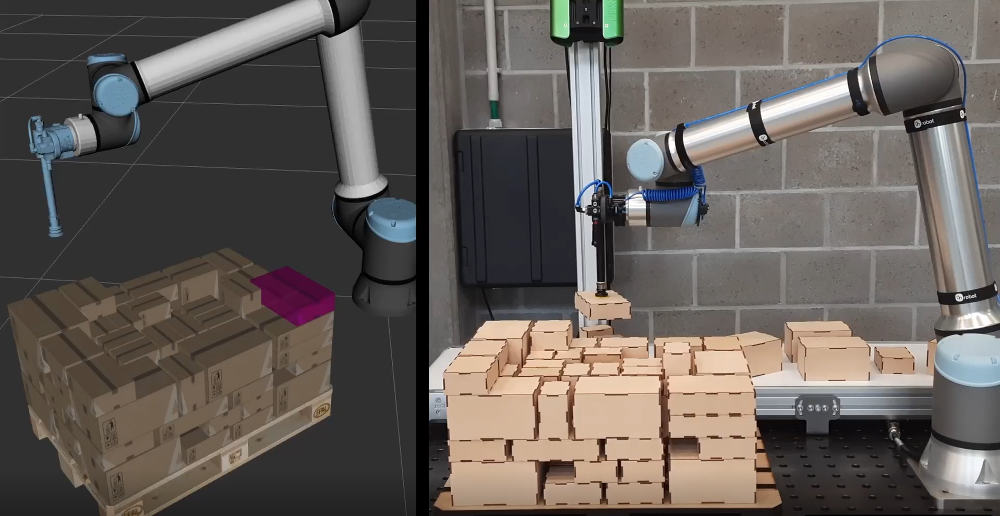

Projects overview
2024-2538-SIMROP
The SIMROP project facilitated the development of a skill–based programming framework. Several former projects within Flanders Make introduced the concept of skill–based programming for robotic applications, however a reusable and sustainable architecture and maintained implementation – nor an aligned vision on the paradigm – did not concretely exist.
The SIMROP skill–based programming framework aims to implement a contemporary interpretation of a platform for the development of modular, reusable and scalable robotic skills. The design leverages ROS2 and behavior trees to compile a foundational architecture and reusable best-practice patterns for the development of intelligent and autonomous robotic systems.
Conceptually, the SIMROP skill–based framework is based on inquiring experiences with the use of SkiROS2, a skill–based programming framework developed by researchers at the universities of Lund (SW) and Copenhagen (DE). From an Architecture perspective, the implementation is heavily inspired on the software architecture of the Navigation stack for ROS2.
The architecture is documented on the SIMROP documentation page, where also tutorials on the use of the framework can be found. Documentation and tutorials are under continuous development.
The implementation of a reusable core architecture for building ROS2-based frameworks.
c++ ROS2 python
The implementation of the SIMROP skill–based programming framework.
c++ ROS2 behavior trees
Repository that releases Docker base images that contain the SIMROP core architecture and the SIMROP skill–based framework.
Docker
The documentation and tutorial page about the architecture and use of the SIMROP skill–based framework.
read-the-docs
2024-1023-CTO_ACTION-PALLETIZING_SOLUTION
In the 2024-1023 CTO action, one of the goals was to work on the topic of mixed palletizing, or the Distributor’s Pallet Loading Problem (DPLP). A Heuristics based algorithm was developed at Flanders Make, addressing the problem of interest. Around the algorithm itself, a palletizing framework was developed, serving as an experimental environment to benchmark the performance of different algorithms, and anticipating industrial adoption. A physical scale model setup was built at Flanders Make where an industrial robot arm palletizes boxes that are supplied on a conveyor belt in order to practically validate and showcase the results provided by the algorithm implementations. The palletizing framework also anticipates the development of new pallet solvers, as the logic itself fits in the framework in de shape of a plugin.
Additionally, the robot in the physical demonstrater was integrated with MoveIt, the motion planning and kinematics framework for ROS2. As the pallet itself is a dynamically growing obstacle for the robot, MoveIt allowed to perform collision free trajectories during palletizing.
{kind=link}

Figure 1 : Integrated demonstration of the palletizing framework. Left: RVIZ plugin for visualisation of the result of the solver algorithm. Right: physical scale model demonstrator at Flanders Make
The implementation of the palletizing framework, built for accommodating pallet solver plugins. Includes the RVIZ plugins for pallet visualisation and the user interface to use the solvers.
C++ ROS2
The implementation of the heuristics-based pallet solver.
Python REST-api